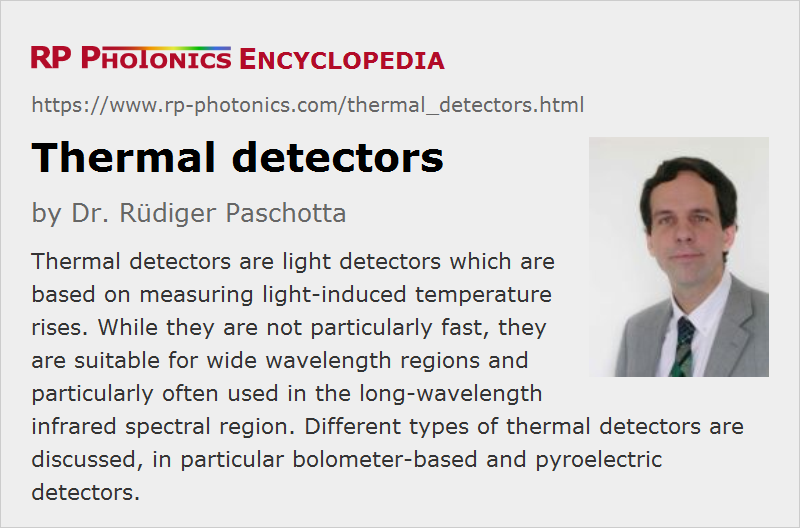

Thermal Detectors
Definition: light detectors which are based on measuring light-induced temperature rises
Opposite term: photodetectors
German: thermische Detektoren
Categories: photonic devices, light detection and characterization
How to cite the article; suggest additional literature
Author: Dr. Rüdiger Paschotta
There are various kinds of light detectors, which are based on measuring temperature rises which result from the absorption of light. This is in contrast to photodetectors, which are affected by photons in other ways – not through the generation of heat, but usually through light-induced transitions of electrical carriers.
Thermal detectors are frequently used in spectral regions which are difficult to access with photon detectors – in particular, for long-wavelength infrared light. Also, they are used where their low speed, moderate sensitivity and low dynamic range is no serious problem – for example, as optical power meters for lasers.
The most substantial advantage of thermal detectors over photodetectors is that they can be sensitive in very wide spectral regions, and exhibit a nearly constant responsivity over wide wavelength regions. This is because it is not overly difficult to make black coatings with very broadband absorption.
Many thermal detectors can be operated at or near room temperature – sometimes with temperature stabilization of the sensor. For particularly sensitive thermal detection, however, operation at low temperatures is often required – with thermoelectric cooling (Peltier cooling) for temperature reductions of some tens of kelvins, Stirling coolers for substantially lower temperatures of e.g. 100 K, and in some cases even liquid helium cooling for operation at 4 K.
Many thermal detectors measure the total optical power of an input beam (e.g. in a laser power meter), but there are also image sensors based on thermal detectors, e.g. microbolometers.
Basic Operation Principle
Generally, a thermal detector contains the following:
- There is a light absorber, which is thermally more or less insulated against the environment, so that its temperature can rise when incident light is absorbed.
- There is also some temperature sensor, which either measures the absolute temperature of the absorber or the temperature difference between absorber and heat sink. In the former case, one either needs to keep the heat sink temperature constant or to measure it separately.
In addition, there are some parts for mounting the sensor, possibly also a cooling system and integrated electronics for signal amplification and digitization.
Absorbers
The absorption of light should be strong in order to obtain the maximum temperature rise for highest sensitivity of the detector. One often uses relatively thin surface absorbers, having a rather small absorption length for the light. That minimizes the heat capacitance and thus optimizes the speed of response. However, the most robust absorbers are volume absorbers with a longer absorption length; these can tolerate high optical intensities, e.g. for operation with energetic laser pulses.
For operation at high input power levels (for example, laser power meters for high-power lasers), the heat sink, into which much of the generated heat flows, needs to be actively cooled with a fan or even with flowing water.
When an absorber is operated with too high optical power over sufficiently long time, or with too strong focusing of a laser beam, it may be damaged. However, many thermal detectors can often tolerate a substantial overload e.g. during a couple of seconds.
Trade-off Between Sensitivity and Bandwidth
Thermal detectors are subject to a fundamental trade-off between sensitivity and measurement bandwidth (speed). For a high sensitivity, one should maximize the thermal resistance between the absorber and the heat sink, so that one obtains larger temperature rises. That, however, increases the thermal time constant and thus reduces the possible measurement bandwidth. In a simple thermal model, the thermal time constant is the thermal capacitance (in units of J/K) divided by the thermal conductivity (in W/K).
For a shorter thermal time constant, one can also try to reduce the thermal capacity. For that, the area and thickness of the absorber are made as small as possible; that may lead to a reduced active area, but also to an enhanced sensitivity.
Note that the temperature sensor also contributes to the thermal capacity, and in some cases it also sets a limit to the achievable thermal impedance.
While the thermal conductance could in principle be strongly reduced, e.g. by suspension of the sensor element with very thin wires, there is also an exchange of energy of the sensor area with the environment (the heat sink and even the outside world) through thermal radiation. That exchange is unavoidable, since the emissivity of the absorber material is determined by its absorption, which must be substantial for a light sensor.
Temperature Fluctuations
A fundamental limitation to the noise-equivalent power of a thermal detector comes from temperature fluctuations. With a simple thermal model, one can show that the standard deviation of the temperature of the absorber is proportional to the temperature and inversely proportional to the square root of the thermal capacitance.
Temperature fluctuations are most relevant for miniaturized absorbers, as used in microbolometers, and for operation at high temperatures. However, detectors may in practice still be limited by other noise sources, e.g. thermal electrical noise in the temperature sensor.
Influence of External Heat Sources
As thermal detectors need to sensitively detect small temperature increases, they are also more or less sensitive to heat from external sources. For example, a thermal power meter often shows some signal without any incident light when one touches its housing with fingers. Note that one cannot thermally insulate such a detector from the environment, since some substantial thermal power may have to be released to the environment during operation. Therefore, one should avoid external influences like touching during operation, laser beams etc.
Types of Thermal Detectors
Detectors with Bolometers
A bolometer is based on measuring a temperature-dependent electrical resistance. It can essentially consist of an absorber layer and a resistive thermometer layer, plus some additional means for suspending the device with proper thermal insulation and providing two electrical contacts. For example, thermal insulation may be provided by an air gap in conjunction with a reflective layer, which suppresses energy exchange via thermal radiation. The sensor can be suspended with its electrical wires.
Deviating from that operation principle, there are also antenna-coupled microbolometers, where incident infrared radiation is received by a small antenna, and the generated electrical power is dissipated in an impedance-matched resistive thermometer layer.
An important figure of merit for the thermometer layer material is the temperature coefficient of resistance (TCR) α, which is defined as the temperature derivative of the resistance, divided by the resistance; the units are K−1.
For a high sensitivity of the measurements, one of course prefers materials with a high temperature coefficient of the resistance. Some frequently used bolometer sensor types are the following:
- There are thin films of semiconductor materials such as vanadium oxide (VOX), gallium- and indium-doped germanium and amorphous silicon (a-Si). Also, there are sintered powders of metal oxides, acting as semiconductor resistors. The TCR of such materials is negative, and its magnitude typically scales inversely to the square of the absolute temperature.
- At very low temperatures, one also sometimes uses resistive metal wires.
- There are bolometers based on a superconducting material, which is operated close to its transition temperature; that results in a very high sensitivity, but also requires very precise temperature stabilization. Superconducting bolometers are not common, but only used for special applications, for example in fundamental physics experiments.
- Carbon resistors have also been used for a while, but have largely been replaced with germanium sensors.
Temperature-dependent resistors are generally called thermistors. Semiconductor resistors are negative temperature coefficient thermistors (NTCs), for example, because their resistance decreases with increasing temperature.
The noise-equivalent temperature difference (NETD) does not only depend on the temperature coefficient of resistance, but also on thermal noise – the strength of which essentially depends on the temperature. The highest detector sensitivities, or quantitatively the lowest noise-equivalent temperature differences, are clearly obtained for low-temperature operation.
Bolometers are used in different types of infrared detectors. There are laboratory instruments, which can reach a very high sensitivity, typically with operation at very low temperatures. Also, there are image sensors based on microbolometers (one for each pixel), which are used e.g. in thermal imaging cameras. They are often operated at or near room temperature.
Detectors with Thermocouples and Thermopiles
A thermocouple is essentially obtained by connecting a metallic wire on both sides with metallic wires consisting of a different material. If a temperature difference occurs between the two wire connections, a thermoelectric voltage occurs, which is approximately proportional to the temperature difference (Seebeck effect). That voltage can be used in a thermal detector, if such a thermocouple is mounted between the absorber and the heat sink.
The thermoelectric voltage from a thermocouple is rather small, typically in the low millivolt region. Therefore, one often uses thermopiles, consisting of multiple thermocouples connected in series. They all have one junction on the side of the absorber and the other one on the side of the heat sink. A laser power sensor can have thermocouples distributed over a larger area – in an axial sensor design, in a plate between the absorber layer and the heat sink. It is generally no problem if the heat generation is not uniform, e.g. due to absorption of a laser beam with limited diameter, since the overall thermoelectric voltage is not sensitive to that. It is only that the absorber may be damaged for too high local intensities.
There are also radial thermopile sensors, where the thermocouples form a ring around the illuminated absorber area. Such sensors are substantially slower than axial sensors, however, essentially because the heat has to travel over a longer distance.
Such thermopile laser sensors are used in many laser power meters.
Using thermopiles is less practical for imaging detectors, which need to be made in a simpler way. For example, one may use many thermocouples, one for each pixel, placed between an absorber layer and a silicon-based readout chip, which can directly amplify the small thermoelectric voltages.
For measuring high pulse energies, there are thermal detectors in the form of laser calorimeters. Here, a larger volume of absorber material is heated by a laser pulse, and the resulting temperature increases again measured with thermopiles. The thermal time constants of calorimeters are substantial, but such energetic laser pulses are anyway normally not available with substantial repetition rates.
Pyroelectric Detectors
Pyroelectric detectors are based on the pyroelectric effect in ferroelectric crystals. They essentially react to temperature changes and cannot produce signals for constant optical powers. Therefore, they are mostly used for measuring pulse energies (→ optical energy meters). However, there are also other applications, for example in motion detectors, where changes of infrared radiation are detected on much longer time scales of milliseconds to seconds.
For more details, see the article on pyroelectric detectors.
Questions and Comments from Users
Here you can submit questions and comments. As far as they get accepted by the author, they will appear above this paragraph together with the author’s answer. The author will decide on acceptance based on certain criteria. Essentially, the issue must be of sufficiently broad interest.
Please do not enter personal data here; we would otherwise delete it soon. (See also our privacy declaration.) If you wish to receive personal feedback or consultancy from the author, please contact him e.g. via e-mail.
By submitting the information, you give your consent to the potential publication of your inputs on our website according to our rules. (If you later retract your consent, we will delete those inputs.) As your inputs are first reviewed by the author, they may be published with some delay.
See also: pyroelectric detectors, infrared detectors, optical energy meters, thermal imaging
and other articles in the categories photonic devices, light detection and characterization
|  |
If you like this page, please share the link with your friends and colleagues, e.g. via social media: 


These sharing buttons are implemented in a privacy-friendly way! |
2020-04-12
What are the pros and cons of thermopiles and pyroelectric sensors compared to each other?
Answer from the author:
These are hardly competing with each other. While thermopiles are widely used for measuring the power of continuous-wave beams, or the average powers of fast pulse trains, pyroelectric sensors are used for measuring pulse energies.